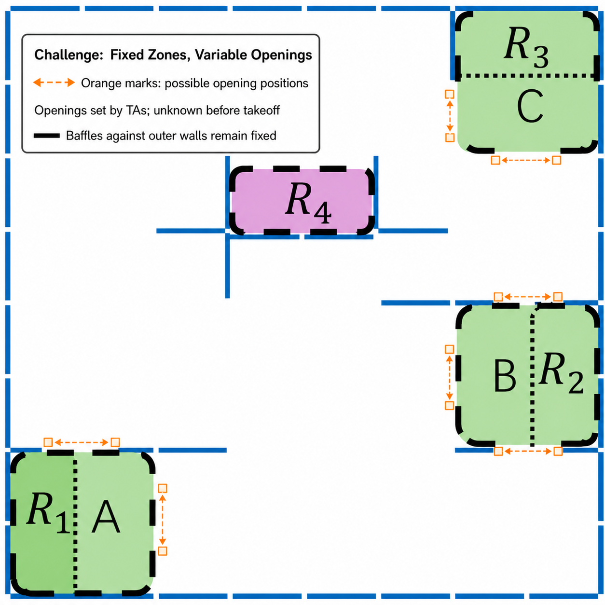

Competition Brief: Integrated Project Competition
Confirm the Group URI Before Running
Python scripts in this experiment read the complete radio URI assigned in Experiment 3 from the CFLIB_URI environment variable. Do not copy the group address into every code file. In each new terminal, check it first:
echo "$CFLIB_URI"The output must exactly match the complete URI on the group label, including the interface, channel, data rate, and address. If it is empty or incorrect, repeat the “Save the complete URI in the virtual machine” step in Experiment 3 before running the script.
1. Integrated project demonstration task description
This task is oriented to the experimental content of the first three days of this summer school, and is designed to allow students to comprehensively demonstrate environmental configuration, drone control, sensor application, path planning and team collaboration capabilities. The presentation task encourages everyone to use their creativity within safe boundaries and organize the previously completed experimental content into small projects that can be demonstrated, explained, and repeated.
2. Task content
This comprehensive project display is divided into two sections: creative tasks and racing tasks. Completing basic tasks can be regarded as meeting the display requirements; if the task completion effect is better, or if independent optimization ideas are reflected in path design, control strategy, sensor use, team collaboration, etc., higher feedback can be obtained in the display evaluation.
Creative task section
The display tasks in this section are expected to be completed by students based on the Crazyflie drone sensor application knowledge and corresponding software programming knowledge they have learned. There are no restrictions on which sensors or program modules to use. Students are encouraged to be creative based on the rules and complete the tasks with better strategies.
Rule summary
| Item | Creative-section rule |
|---|---|
| Route | Take off from Area A, pass through Areas B and C in either order, and return to Area A to land. |
| Speed | Use one constant speed throughout the run, and keep it below 0.3 m/s. |
| Height | Do not fly above the top edge of the arena baffles, which are 45 cm high. |
| Collisions | A valid run may contain at most two confirmed collisions. The third collision immediately invalidates the run. |
| Reward zones | R1, R2, R3, and R4 are all reward zones. R1 is located inside the start/finish Area A and also earns a reward. |
| Ranking | Apply the scoring formula; a lower final value is better. |
1. Task description
Now let’s explain the task requirements of the practical demonstration task of this section. First, the map environment of the mission is as follows, and the schematic intervals of each mission area have also been marked. Among them, the sizes of areas A, B, and C are the size of 2*2 baffles (the height of the rectangular baffle is 45cm and the width is 35cm. The baffles are placed vertically, that is, the actual size of area ABC is 70cm*70cm). The areas R1, R2, R3, and R4 are the size of 1*2 baffles, among which R1, R2, and R3 are located in areas A, B, and C respectively.
The general mission requirements are as follows: the drone is placed anywhere in area A to take off, and needs to pass through points B and C and finally land in point A. The order of passing through points B and C is arbitrary, that is, the general requirements for passing points are:
ABCA or ACBA
Reward mechanism: R1, R2, R3, and R4 all carry rewards. R1 is located inside the start/finish Area A, while R2, R3, and R4 are distributed along the task route. Each reward zone may be counted only once in a run.
The creative-section score combines effective flight distance, earned rewards, and the landing penalty, as defined by the scoring formula below.

2. Demonstration procedure
Before takeoff, explain the code logic, constant flight speed, sensor usage, and emergency-stop plan to the instructor. The speed must remain below 0.3 m/s and must not change during the run. One team member operates the terminal and emergency stop, while another records the complete run. Timing starts when the aircraft first moves in the xy plane and stops when the aircraft begins its landing action. The final score is calculated as follows:
Creative-section scoring formula
S = v × (t1 - t2) - Reward + Punish
S: final score in metres; a lower value is better.v: constant flight speed used throughout the task, in m/s.t1: measured time from the first xy-plane movement at the start until landing begins, in seconds.t2: total duration of thetime.sleepcalls placed after movement steps to stabilize the aircraft, in seconds; the instructor confirms this value from the code before takeoff.Reward: 1.4 m each for R2 and R3, 4.9 m for R4, and 1.05 m for R1. Add all rewards earned before substituting the value into the formula.Punish: 0.35 m for a non-standard landing position inside Area A; otherwise 0.
3. Detailed evaluation criteria
The final display evaluation results of the creative section from low to high are: pass, good, and excellent.
Completing the basic tasks (i.e. taking off from point A, passing through B and C and then returning to A) will result in a passing score in this section.
Throughout the run, the aircraft must remain below the top edge of the 45 cm baffles. A run may contain at most two confirmed collisions; the third collision immediately invalidates the run. Extremely light brushing contact is not counted as a collision. The instructor determines confirmed collisions from on-site observation and the video record. Collision count is not substituted into the scoring formula; it is used only to determine whether the run remains valid.
The evaluation criteria for the vertical projection of the drone are based on the positions of the four motors. If the vertical projection of the four motors is in a certain area, it is deemed that the projection is completely within this area. If the projection of one motor passes through a certain area, it is deemed to have passed through this area.
If the vertical projection of the drone completely passes through areas B and C, it will be counted as having passed through areas B and C. When the drone lands, it will be considered as landing completely within area A. If the entire drone is only partially located in area A when landing in area A, a penalty of 0.35m will be imposed (the total score plus 0.35m). If the entire drone is not in area A at all when landing, the flight mission will be deemed a failure.
R1, R2, R3, and R4 can all earn rewards. For R2, R3, and R4, the reward is earned when the aircraft's vertical projection passes through the corresponding zone. R1 is inside the start/finish Area A; its reward is earned when, after the final landing, the projection of at least two motors lies inside R1 or on its boundary. Each reward zone is counted only once per run.
4. Demonstration evaluation instructions
When the final results are settled, the top one-third group will receive an excellent rating, the middle one-third group will receive a good rating, and the bottom one-third group will receive a passing rating.
Encourage technical creativity:
A total of two valid results have been obtained and no penalty was imposed on these two results. The API used by the code to run the drone twice is not exactly the same (for example: motioncommander, multiranger, positioncommander).
A total of two valid results have been obtained and no time penalty was imposed on these two results. The general operating logic used in the code for running the drone twice is completely different (for example: the use of conditional control statements while and if else).
Other uses of technology that teachers believe reflect independent creativity.
If one of the above conditions is met, the rating can be raised by one level when the final results are settled. If two conditions are met, the rating can be raised by two levels, capping it at an excellent rating.
5. Demonstration suggestions
It is recommended that the drone stay away from the baffle when taking off and set the take-off speed lower to facilitate stable take-off attitude and reduce the attitude after each take-off to a stable position.
Make sure there is a student controlling the terminal at all times. If the drone starts scratching the bezel, please terminate the program as soon as possible to avoid damage to the drone hardware.
Pay attention to the order during the test flight at the venue. Students are consciously courteous to avoid collision and impact of drones.
If the above rules are unclear or unclear, consult the teacher to clarify the standards.
Speed task section
This section is ranked primarily by completion time. There is no competition speed limit, but the height and zero-collision requirements remain mandatory. Any confirmed collision invalidates the current speed-trial result.
Rule summary
| Item | Speed-section rule |
|---|---|
| Route | Take off from the indicated start area, enter the finish area, and complete the landing. |
| Speed | No speed limit; each team selects its own speed and control strategy. |
| Height | Do not fly above the top edge of the arena baffles, which are 45 cm high. |
| Collisions | No collisions are allowed. Any confirmed collision immediately invalidates the run. |
| Timing | From the moment the aircraft leaves the ground until it has fully landed and stopped inside the finish area. |
| Ranking | After any landing-time penalty is added, a shorter time is better. |
1. Task description
The map environment of this section is consistent with the map environment of the creative section. For detailed map size parameters, please refer to the description of the creative section module.
The aircraft takes off from any position inside the indicated start area and lands inside the finish area. The speed section has no speed limit, but the aircraft must remain below the top edge of the 45 cm baffles. Timing starts when the aircraft leaves the ground and stops when it has completely landed and become stationary inside the finish area. Any confirmed collision immediately invalidates the run, which is then excluded from the time ranking.

2. Demonstration procedure
Two methods
① When you are ready, find the teacher to help you time and log in the scores. They will help you time and log in the scores according to the above question requirements.
② You can shoot a video to record the entire flight process yourself, and use the length of the video to judge the overall time spent logging in. However, you must pay attention to the video to clearly capture the entire process of the drone taking off and landing, when the drone started to take off, and the final landing position of the drone to see if it is in the final landing range.
3. Detailed evaluation criteria
A valid speed run must remain below the baffle height and contain no collisions. At the final landing, at least two motors must be inside the finish area or on its boundary for a normal completion. If only one motor is inside the finish area or on its boundary, add a 5-second penalty. All other landing outcomes invalidate the run.
4. Demonstration evaluation instructions
The final results of the racing section are sorted by group and included in the comprehensive display evaluation together with the performance of the creative section.
5. Demonstration suggestions
Make sure there is a student controlling the terminal at all times. If the drone starts scratching the bezel, please terminate the program as soon as possible to avoid damage to the drone hardware.
Pay attention to the order during the test flight at the venue. Students are consciously courteous to avoid collision and impact of drones.
If the above rules are unclear or unclear, consult the teacher to clarify the standards.
It is strongly recommended that students get a relatively basic score first, and then continue to optimize based on the results.
Challenge Section (20% Bonus)
The challenge section is optional and can add up to 20% of the maximum base evaluation score. Choosing not to participate, or failing to record a valid challenge result, does not reduce the base score already earned from the creative and speed sections.
Core change: opening positions are unknown before takeoff
The challenge is based on the creative-section rules. The A, B, and C task zones and the R1, R2, R3, and R4 reward zones remain fixed. Baffles against the outer arena walls also remain fixed; only inward-facing baffle segments and openings are adjusted by a teaching assistant before each challenge. Teams may not know, inspect, or test-fly the current layout before takeoff.

Challenge rules
- Use the creative-section route, scoring formula, and reward values: take off from A, pass through B and C, return to A, and count any R1-R4 rewards earned.
- Use the creative-section flight limits: one constant speed below
0.3 m/s, flight below the top edge of the 45 cm baffles, and no more than two confirmed collisions in a run. - A, B, C, and R1-R4 remain fixed, and baffles against the outer arena walls also remain fixed. Only inward-facing baffle segments, corridor directions, and opening positions may change; the layout prepared by the teaching assistant is authoritative.
- The program must identify traversable directions from sensor data during flight. A route that depends only on hard-coded baffle coordinates or fixed opening positions does not meet the challenge requirement.
- The creative-section formula is also used for the challenge, and a lower result is better. A valid challenge result is used to calculate the separate bonus of up to 20%.
Challenge procedure
- After completing code, hardware, and emergency-stop checks, notify a teaching assistant before starting the challenge.
- The teaching assistant adjusts only the inward-facing baffles and openings around A, B, and C; baffles against the outer arena walls are not moved. The team may not inspect the layout or perform a test flight before takeoff.
- After confirming arena safety and starting the recording, the teaching assistant authorizes takeoff. The recording must cover takeoff, traversal of B/C, reward-zone decisions, collisions, and the return landing in A.
- After the run, the teaching assistant records the layout, elapsed time, reward zones, collision count, landing position, and whether the result is valid.
Final integrated demonstration evaluation
The base evaluation continues to assign 50% to the creative section and 50% to the speed section. The challenge section provides a separate bonus of up to 20% beyond the base evaluation.
Comprehensive evaluation index = (creative section evaluation ranking + racing section ranking)/2
In the creative section, those with excellent evaluations are ranked 1, those with good evaluations are ranked 2, and those who have completed the basic requirements are ranked 3.
A lower base evaluation index is better. The challenge bonus is recorded separately after the base evaluation. If a team does not enter the challenge or its challenge result is invalid, the bonus is zero and the base evaluation is not reduced.
Competition Arena Record
Competition evaluation should combine on-site flight, terminal logs, and visual records to check key passing points and safety boundaries.

Integrated-task Flight Record
The video record is used to check route completion, safety boundaries, and scoring evidence.